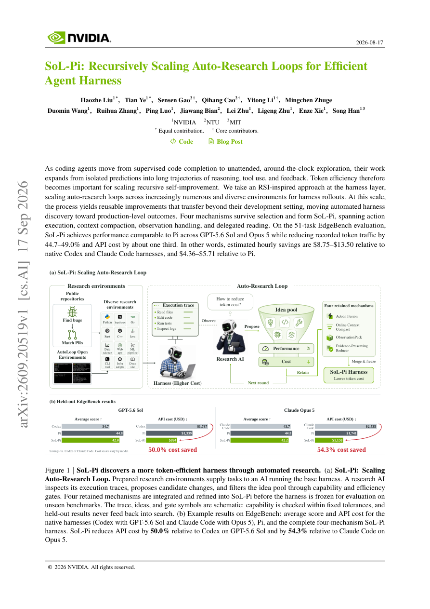

#1
★ 8/10
SoL-Pi: Recursively Scaling Auto-Research Loops for Efficient Agent Harness
SoL-Pi: Recursively Scaling Auto-Research Loops for Efficient Agent Harness

图 Figure · Page 1 of paper
🎯 （AI 中文深度分析暂不可用：Anthropic API 额度不足。英文栏为论文原文摘要，下方链接均可正常访问。）
As coding agents move from supervised code completion to unattended, around-the-clock exploration, their work expands from isolated predictions into long trajectories of reasoning, tool use, and feedback
| 维度 | 中文 | English |
|---|---|---|
| ❓ 待解决 的问题 |
（AI 中文深度分析暂不可用：Anthropic API 额度不足。英文栏为论文原文摘要，下方链接均可正常访问。） | As coding agents move from supervised code completion to unattended, around-the-clock exploration, their work expands from isolated predictions into long trajectories of reasoning, tool use, and feedback. Token efficiency therefore becomes important for scaling recursive self-improvement. We take an RSI-inspired approach at the harness layer, scaling auto-research loops across increasingly numerous and diverse environments for harness rollouts. At this scale, the process yields reusable improvements that transfer beyond their development setting, moving automated harness discovery toward production-level outcomes. Four mechanisms survive selection and form SoL-Pi, spanning action execution, context compaction, observation handling, and delegated reading. On the 51-task EdgeBench evaluation, SoL-Pi achieves performance comparable to Pi across GPT-5.6 Sol and Opus 5 while reducing recorded token traffic by 44.7-49.0% and API cost by about one third. In other words, estimated hourly savings are \$8.75-\$13.50 relative to native Codex and Claude Code harnesses, and \$4.36-\$5.71 relative to Pi. |
| 💡 解决 的亮点 |
（AI 中文深度分析暂不可用：Anthropic API 额度不足。英文栏为论文原文摘要，下方链接均可正常访问。） | See the paper’s original abstract in the "Problem / 背景" row above. |
| 🧪 实验 内容 |
（AI 中文深度分析暂不可用：Anthropic API 额度不足。英文栏为论文原文摘要，下方链接均可正常访问。） | See the paper’s original abstract in the "Problem / 背景" row above. |
| 📊 实验 结果 |
（AI 中文深度分析暂不可用：Anthropic API 额度不足。英文栏为论文原文摘要，下方链接均可正常访问。） | See the paper’s original abstract in the "Problem / 背景" row above. |
| 🏁 结论 | （AI 中文深度分析暂不可用：Anthropic API 额度不足。英文栏为论文原文摘要，下方链接均可正常访问。） | See the paper’s original abstract in the "Problem / 背景" row above. |
| 🔗 论文 链接 |
arXiv: 2609.20519v1 · 📥 PDF | |
⚙️ Method · 方法详解
（AI 中文深度分析暂不可用：Anthropic API 额度不足。英文栏为论文原文摘要，下方链接均可正常访问。）
See the paper’s original abstract in the "Problem / 背景" row above.
🌟 Why It Matters · 为什么重要
（AI 中文深度分析暂不可用：Anthropic API 额度不足。英文栏为论文原文摘要，下方链接均可正常访问。）
See the paper’s original abstract in the "Problem / 背景" row above.